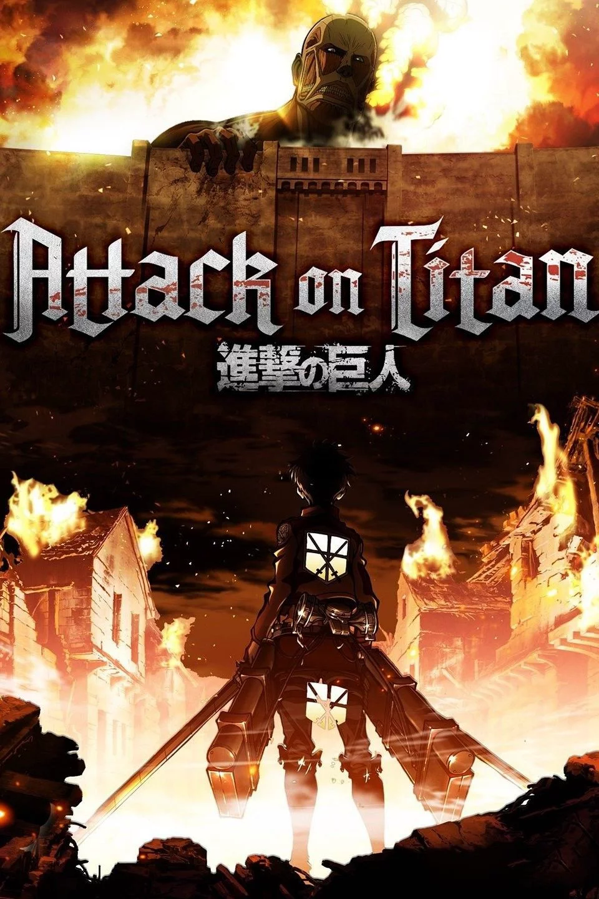
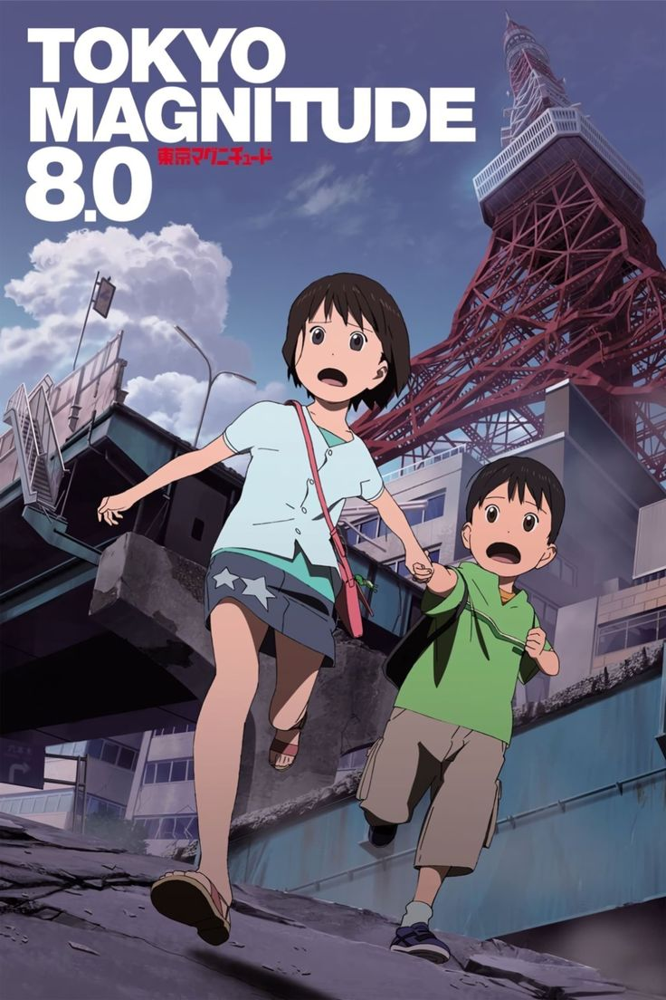

Wybór najlepszych serii/filmów anime
Dramat Survivalowy
Postapokaliptyczny dramat survivalowy w anime to intensywny gatunek skupiający się na walce o przetrwanie w obliczu globalnej katastrofy. Fabuła zazwyczaj wrzuca bohaterów – często zwykłych ludzi lub nastolatków – w surowe środowisko zniszczone przez wojnę, pandemię czy kryzys ekologiczny. Zamiast widowiskowej akcji, produkcje te oferują głębokie studium ludzkiej psychiki i moralności w warunkach skrajnego niedoboru zasobów. Bohaterowie muszą nieustannie dokonywać trudnych wyborów etycznych, balansując między zachowaniem człowieczeństwa a instynktem samozachowawczym. Gatunek ten wyróżnia się gęstym, melancholijnym klimatem oraz estetyką niszczejących miast i ruin. Skłania on widza do głębokiej refleksji nad kruchością ludzkiego życia oraz naturą społeczeństwa w obliczu ostatecznego kryzysu.

Heavenly Delusion to mistrzowskie połączenie thrillera science-fiction, postapokalipsy i dramatu psychologicznego, w którym fabuła rozwija się dwutorowo. W zrujnowanej Japonii nastoletni Maru i jego ochroniarka Kiruko wędrują przez niebezpieczny świat w poszukiwaniu mitycznego „Nieba”, walcząc z ludźmi oraz potworami zwanymi Hiruko. Równolegle, w sterylnym i odizolowanym od świata zewnętrznego ośrodku, grupa dzieci dorasta w utopijnych warunkach pod opieką robotów, dopóki nie zacznie odkrywać mrocznych sekretów tej placówki. Z czasem obie osie fabularne zaczynają się subtelnie zazębiać, tworząc skomplikowaną układankę. Anime zachwyca kinową jakością animacji, świetnie napisanymi relacjami między bohaterami oraz gęstym, detektywistycznym klimatem, który porusza dojrzałe tematy moralne.

Attack on Titan to seria która zrewolucjonizowała współczesną popkulturę. Fabuła ukazuje brutalny świat, w którym resztki ludzkości chronią się za gigantycznymi murami przed Tytanami – humanoidalnymi olbrzymami. Stuletni pokój kończy się, gdy potwory niszczą zewnętrzną barierę. Nastoletni Eren Yeager po stracie matki przysięga zemstę i wraz z przyjaciółmi wstępuje do elitarnego Korpusu Zwiadowczego, by walczyć o przetrwanie. Z czasem prosta wojna zmienia się w skomplikowany thriller pełen politycznych intryg i tajemnic o pochodzeniu wrogów. Seria zachwyca spektakularnymi, dynamicznymi walkami oraz epicką ścieżką dźwiękową, stanowiąc bezkompromisowe studium natury wolności, wojny i cyklu nienawiści.

Nausicaä z Doliny Wiatru to kamień milowy animacji w reżyserii Hayao Miyazakiego, łączący postapokalipsę, epickie fantasy oraz dramat ekologiczny. Fabuła rozgrywa się tysiąc lat po globalnym kataklizmie, gdy większość Ziemi porasta Toksyczne Morze – las pełen trujących zarodników i gigantycznych owadów. Jednym z nielicznych bezpiecznych miejsc jest Dolina Wiatru, rządzona przez nastoletnią księżniczkę Nausicaä, która posiada niezwykły dar komunikacji z naturą i szuka sposobu na pokojowe współistnienie z lasem. Pokój kończy się, gdy brutalne imperium Tolmekii postanawia ożywić dawną broń masowej zagłady, by doszczętnie spalić toksyczną biosferę. Ich działania wywołują furię owadów i doprowadzają do wojny, a Nausicaä musi zrobić wszystko, by powstrzymać ludzkość przed ponownym zniszczeniem świata. Film zachwyca piękną, ręcznie rysowaną animacją oraz hipnotyzującą muzyką Joe Hisaishiego, stanowiąc ponadczasowe, pacyfistyczne studium relacji człowieka z naturą.

Japan Sinks: 2020 to 10-odcinkowy serial katastroficzny w reżyserii Masaakiego Yuasy, będący nowoczesną i odważną adaptacją klasycznej powieści Sakyo Komatsu. Fabuła rozpoczyna się w Tokio, gdy potężne trzęsienie ziemi obraca miasto w ruinę, a ruchy płyt tektonicznych sprawiają, że cały archipelag japoński zaczyna gwałtownie tonąć w oceanie. W centrum wydarzeń znajduje się rodzina Mutō, która wraz z grupą ocalałych rozpoczyna desperacką wędrówkę na południe kraju, próbując uciec z niknącego pod stopami lądu. Podczas podróży bohaterowie muszą mierzyć się z niszczycielskimi siłami natury oraz brutalnymi zachowaniami ludzi w obliczu kryzysu. Seria wyróżnia się realizmem w ukazywaniu kruchości życia, a charakterystyczny, ekspresyjny styl animacji oraz poruszająca muzyka tworzą bolesne, lecz ostatecznie pełne nadziei studium straty i ludzkiej odporności.

Tokyo Magnitude 8.0 to wybitny serial katastroficzny i jeden z najbardziej realistycznych dramatów w historii anime, oparty na autentycznych symulacjach i analizach sejsmologicznych. Fabuła skupia się na zbuntowanej gimnazjalistce Mirai i jej młodszym bracie Yūkim, którzy podczas pobytu na wystawie robotów w Tokio stają się świadkami potężnego trzęsienia ziemi o sile 8.0 stopni w skali Richtera. Gdy nowoczesna metropolia zamienia się w ruinę, odcięte od rodziców rodzeństwo rusza w dramatyczną, pieszą wędrówkę przez zniszczone miasto, a pomocą służy im dorosła motocyklistka Mari. Serial całkowicie rezygnuje z przerysowanej akcji na rzecz bolesnego realizmu, ukazując psychologiczne skutki kataklizmu, panikę tłumu oraz trudną pracę służb ratunkowych. To niezwykle wzruszające, trzymające w napięciu studium rodzinnej miłości, które prowadzi do jednego z najbardziej poruszających finałów w historii animacji.